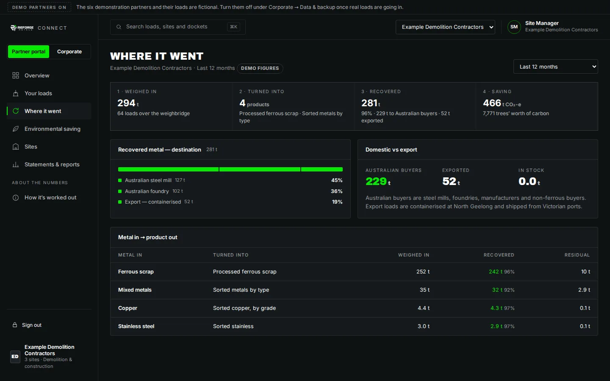
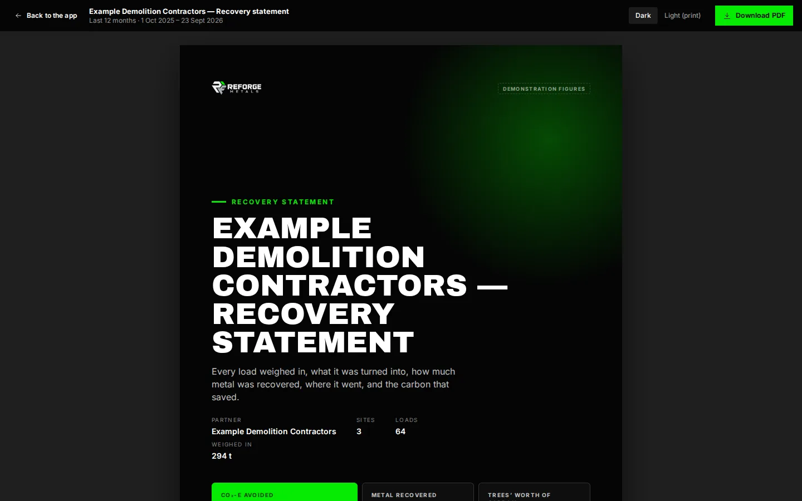

Traceability
Recorded. Reported. Proven.
Every tonne of metal that comes through Reforge Metals is weighed in, tracked through the line, weighed out, dispatched and reported. The partner who sent it and the buyer who receives it both get the record.
Chain of custody
Four numbers, every load
This is what Reforge Metals records for every load, and what every statement is built from.
Weighed in
The load crosses the weighbridge at North Geelong. Docket number, date, partner, site and gross weight are recorded before anything is touched.
Turned into
The load goes down the line for its metal — spring steel to the shredder and magnets, cable to the granulator, non-ferrous to sorting. The product it becomes is recorded against the load.
Recovered
Saleable metal is weighed out. Recovery is the weight out over the weight in. Where an output weight was not taken, the usual rate is used and the load is marked as an estimate.
Environmental saving
Tonnes recovered × the published recycling credit for that metal — the carbon avoided by not making the same metal new from ore. Sources on every statement.

For partners who send us metal
See where your metal went
Councils, manufacturers, demolition contractors and recyclers who send metal to Reforge see every load in their own portal: the weight in, what it was turned into, how much came out, whether it went to an Australian mill or into a container for export, and the carbon that saved.
- Every load with its docket number, weight in and weight out
- Recovery statements for any period — month, quarter, financial year
- Site statements for multi-site organisations
- A statement for any single load, on demand
- Figures that stand up: method and sources printed on every page

For buyers who receive it
Know what you are melting
Every dispatch from Reforge Metals can carry a load statement: the metal, its source stream, the process it went through, weighed output, bale count and the recycled-content basis. Mills get a single-grade feedstock with a paper trail; manufacturers get recycled content they can put in a report.
- Origin: recovered and processed at one facility, North Geelong VIC
- Process: shred, magnetic, vibration, suction, electrostatic — stated per stream
- Weight and form: loose or baled, bale count, container number for export
- Recycled-content basis for your own reporting
What ships with a load
The load statement
One page per load. Same layout whether it is a two-tonne copper lot or a full container of spring steel bales.
| Load | Date · docket number · partner · site |
|---|---|
| Weighed in | Gross weight over the weighbridge, tonnes |
| Metal in | Stream — spring steel, ferrous, copper, cable, aluminium, brass, stainless, mixed |
| Turned into | The product and the process it went through |
| Recovered | Weight out, tonnes, and recovery %. Marked "estimate" if the usual rate was used |
| Residual | What was not metal — reported, not hidden |
| Went to | Australian mill, foundry, manufacturer, non-ferrous buyer, or export (container number) |
| Saving | CO₂-e avoided and trees' worth, with the factor and source |
Why it is built this way
Most recycled-metal paperwork is a weighbridge docket and an invoice. That tells you what a load weighed and what it cost. It does not tell a council what happened to its metal, a manufacturer what it can claim, or a mill what it is putting in the furnace.
Reforge records the whole chain because the group already does: Recycle Group's other businesses report recovery outcomes to councils and corporate clients the same way. Metals are no different — the numbers are just cleaner, because metal is weighed at every step.
Statements are prepared by Reforge Metals. Figures are estimates where marked. Factors and sources are printed on every statement and listed in the portal.
The numbers behind the numbers
How the saving is worked out
Recovered tonnes × recycling credit
Metal in landfill does not rot, so no landfill-methane claim is made. The saving is the carbon avoided by not making the same metal new from ore, net of collection and reprocessing — the published recycling credit for that metal.
Published, sourced, editable
- Steel — 1.5 t CO₂ per tonne (World Steel Association scrap fact sheet)
- Copper — 5.2 t CO₂-e per tonne (US EPA WARM, copper wire)
- Aluminium — 7.9 t CO₂-e per tonne (US EPA WARM, aluminium ingot)
- Mixed metals — 4.8 t CO₂-e per tonne (US EPA WARM)
- Trees' worth — CO₂-e ÷ 0.060 t per tree over ten years (US EPA)
See it with your own numbers
Open the partner portal with demonstration figures, or talk to us about setting up your organisation.